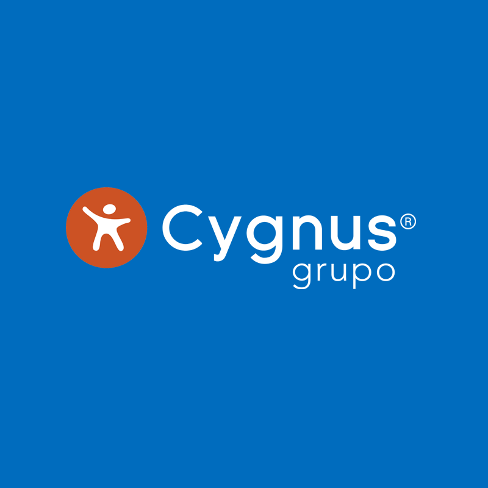

Cygnus S.A
(Informática / Tecnología)
Soporte Técnico Sevice Desk 1B
Funciones desarrolladas:
- Soporte técnico a los usuarios de, aplicaciones y hardware.
- Atención y gestión de incidencias mediante tickets ca service desk.
- Asegurar la resolución sobre procedimientos de los sistemas, estado de los sistemas, procesos de inactividad de los servidores.
- Trabajo en conjunto con los servicios de redes, con los administradores de sistemas de software y/o con el desarrollo de aplicaciones, para restablecer el servicio y para identificar problemas.
- Seguimiento de cada una de las incidencias reportadas y asegurar su resolución en el tiempo estimado.
Manejo backoffice, office, open office, office 365
-Configuración correo Outlook, respaldo PST, OST
-Antivirus
-Active directory
-Administración usuario gsuite y office 365
-Configuración de sistemas de cajas
-Configuración de TBK
-Consultas y manejo Mysql.
-Conexiones Redes Lan y Wlan
-Configuración de Acces Point
-Configuración de VPN